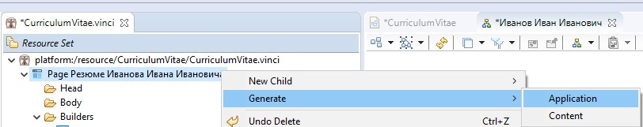
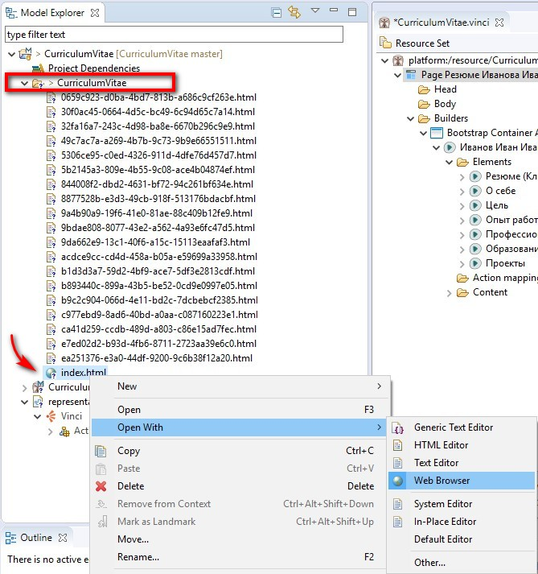
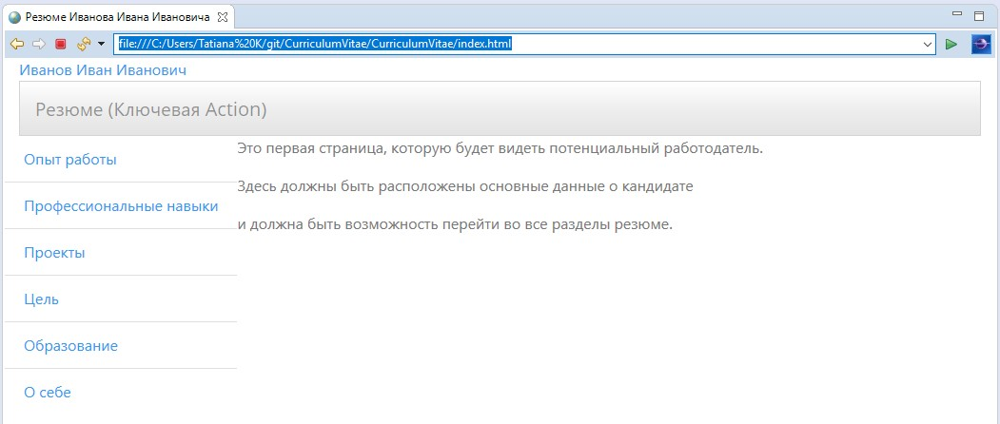

После создания диаграммы можно приступать к генерации сайта и смотреть на результат нашей работы.
Чтобы все сгенерировалось правильно необходимо:
- Чтобы у элемента Page обязательно было имя.
- И у каждой Action было заполнено поле Text.
Выделяем элемент Page, нажимаем правую кнопку мыши и в контекстном меню выбираем Generate -> Application

После этого, в области навигации проекта (Model Explorer) появится новая папка, в которой будут содержаться сгенерированные HTML страницы. Она называется так же как и файл с расширением *.vinci, который мы создавали в самом начале работы.
Открываем эту папку и находим в ней файл index.html. (Или любой другой из сгенерированных файлов - на начальную страницу можно будет перейти, потому что все ссылки будут рабочими)
Правая кнопка мыши -> Open With -> Web Browser

И вот, мы видим первый результат нашей работы. Для наглядности на главную страницу был добавлен текст и в самом начале работы была выбрана тема Bootstrap для нашего сайта (в настройках элемента Page). Но никаких других настроек внешнего вида не было сделано, поэтому наш сайт выглядит более чем скромно, но он уже полностью функционален.
Для того чтобы иметь более адекватное представление о сайте лучше открыть его в используемом вами браузере, а не в Eclipse.
Для этого скопируйте ссылку из адресной строки браузера Eclipse и вставьте ее в адресную строку вашего браузера.

После минимальных настроек внешнего вида и ролей созданных нами Actions внешний вид нашего сайта изменится.
По ссылке можно посмотреть на внесенные изменения.
То, в каком месте будут располагаться наши Action на странице зависит от того, какая роль им назначена. Описание порядка настройки ролей подробно описано в разделе “Настраиваем роли элементов модели”
За внешний вид отвечает специальный “ребёнок” элемента модели - Appearence. Если Appearance не создан и не настроен, то отображение элемента модели будет определяться выбранной темой Bootstrap и ролью, которая назначена Action.
Порядок создания и настройки Appearanse описывается в соответствующем разделе.